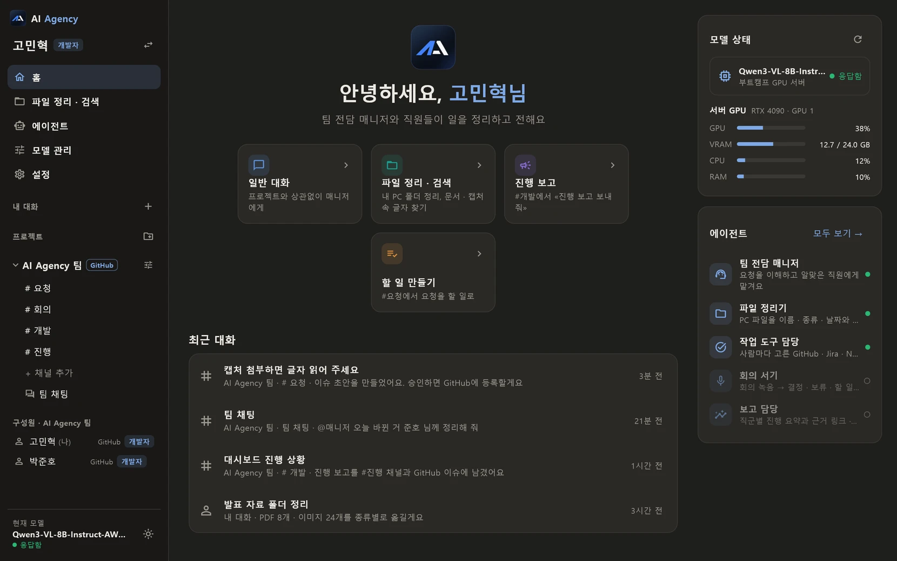

말한 그대로 받아서,
일할 수 있는 기록으로.
AI Agency는 팀마다 붙는 AI 매니저입니다. 기획자가 캡처 한 장과 한 줄로 말해도, 개발자는 다시 묻지 않고 바로 일할 이슈를 받습니다.
시연용 빌드입니다. 함께 쓰는 호스트가 필요합니다.
-
결제 페이지에서 쿠폰 쓰면 금액이 이상해요
- 캡처에서 글자 13줄을 읽었어요
-
GitHub 이슈를 만들까요?
- 제목
- 쿠폰 적용 시 금액 계산 오류
- 현상
- 5,000원 쿠폰인데 10,000원이 빠짐
- 비슷한 항목
- #2 쿠폰을 쓰면 배송비까지 할인됨 (닫힘)
거절승인하고 실행 - #11 등록됨. 현우 님의 할 일 목록에 올라갔어요
매니저 한 명과 직원들이 팀에 붙습니다
매니저가 요청을 받아 알맞은 직원에게 넘깁니다. 무언가를 쓰거나 보내기 전에는 꼭 사람에게 승인을 받습니다.
| 직원 | 하는 일 | 지금 |
|---|---|---|
| 작업 도구 담당 | 사람마다 고른 GitHub, Jira, Notion, Slack에서 할 일을 보고 만듭니다. 만들기 전에 비슷한 일이 있었는지 찾아 보여 줍니다 | 쓸 수 있음 |
| 통역 담당 | 개발 진행을 쉬운 말로 바꿔 #진행 채널과 팀원들의 도구에 남깁니다 | 쓸 수 있음 |
| 파일 정리기 | 내 PC 폴더를 정리하고, 문서와 캡처 속 글자로 파일을 찾습니다 | 쓸 수 있음 |
| 접수 담당 | 요청에서 빠진 기기, 빈도, 화면을 되묻고 이슈 초안을 만듭니다 | 만드는 중 |
| 보고 담당 | «이번 주 어디까지 됐어?»에 직군에 맞는 말로 답합니다 | 만드는 중 |
| 회의 서기 | 회의 녹음을 결정, 보류, 할 일로 정리합니다 | 만드는 중 |
같은 일, 직군마다 알아듣는 말로
로그인하면 기획자, 개발자, 디자이너 보기 가운데 하나로 열립니다. 같은 이슈도 기획자에게는 «언제 고쳐지는지», 개발자에게는 «어디를 고칠지» 중심으로 답하는 것이 목표입니다. 아래는 그렇게 답한 예시입니다.
지수가 볼 때쿠폰 금액 오류는 현우 님이 보고 있어요. 금요일 배포에 들어갈 예정이에요.
현우가 볼 때#11 checkout.js의 discount가 두 번 적용되는지 확인. 비슷한 #2는 배송비 할인 건으로 닫힘.
팀이 이미 쓰는 도구에 그대로
새 도구로 옮기지 않습니다. 사람마다 쓰던 곳을 고르면 매니저가 거기에 남깁니다.
- GitHub 이슈와 댓글
- Jira 작업과 댓글
- Notion 데이터베이스 페이지
- Slack 채널 메시지와 스레드

구조는 셋, 직원은 파일 하나
앱은 화면만 맡고, 일은 내 PC의 호스트가 합니다. 모델은 팀이 정한 서버에서 돕니다.
직원 추가하기
폴더 하나에 함수 몇 개를 쓰면 직원이 됩니다. 함수 설명이 곧 매니저가 읽는 사용법이고, 쓰는 일은 requires_approval=True 하나로 승인 카드가 붙습니다.
모델은 OpenAI 방식 주소면 어디든 연결됩니다. 팀 서버의 vLLM을 기본으로 씁니다.
# host/agents/tracker/agent.py
@tool
def search_tasks(ctx, query: str, limit: int = 10):
"""닫힌 이슈와 PR까지 낱말로 찾는다."""
items = _tracker(ctx).search_items(query, limit)
return {"summary": ..., "table": ...}
@tool(requires_approval=True, preview=preview_create)
def create_task(ctx, title: str, body: str):
"""작업 도구에 할 일을 만든다."""팀 기록이 밖으로 나가지 않게
회사 안에서 쓰려면 무엇이 어디로 가는지 분명해야 합니다. AI Agency는 처음부터 그렇게 나눴습니다.
- 대화는 팀이 정한 서버에서
- 모델은 팀 GPU 서버의 vLLM에서 돕니다. 외부 AI 서비스로 대화를 보내지 않아도 됩니다.
- 캡처 속 글자는 PC 안에서
- 붙인 이미지는 내 PC에서 OCR로 읽습니다. 파일이 서버로 올라가지 않습니다.
- 쓰기는 모두 승인한 뒤에
- 이슈 만들기, 진행 보고처럼 남는 일은 승인 카드에서 사람이 확인해야 실행됩니다.
- 토큰은 호스트에만
- GitHub, Jira 같은 도구의 토큰은 호스트 설정 파일에만 두고 화면과 기록에 내보내지 않습니다.
팀 단위로 시험해 보고 싶다면 도입 문의를 남겨 주세요.
Windows 앱 받기
시연용 빌드 v0.1입니다. 앱은 화면이고, 같은 PC에서 AI Agency 호스트가 함께 돌아야 대화할 수 있습니다.
AI-Agency-Windows.zip 받기Windows 10, 11 (64비트) · 압축 파일 약 13MB
- 압축을 풀고
agent_desktop.exe를 엽니다. - «Windows의 PC 보호» 창이 뜨면 «추가 정보», «실행»을 누릅니다. 아직 코드 서명을 하지 않은 빌드라 뜨는 창입니다.
- 호스트를 켠 뒤 데모 계정 버튼으로 로그인합니다. 호스트 설치는 팀에서 따로 안내합니다.
자주 묻는 질문
ChatGPT 같은 범용 AI와 무엇이 다른가요?
범용 AI는 우리 팀의 지난 이슈, 회의 결정, 진행 중인 PR을 모릅니다. AI Agency의 매니저는 팀의 작업 도구를 읽고 써서, «지난번 닫힌 #2와 비슷해요»처럼 팀 기록에 기대어 답합니다.
매니저가 마음대로 이슈를 만들거나 메시지를 보내나요?
아닙니다. 남는 일은 모두 승인 카드로 먼저 보여 주고, 사람이 승인해야 실행됩니다. 거절하면 아무것도 쓰지 않습니다.
앱만 받으면 바로 쓸 수 있나요?
아직은 아닙니다. 앱과 함께 내 PC에서 호스트가 돌아야 합니다. 지금은 시연용 빌드이고, 앱과 호스트를 한 번에 설치하는 파일을 준비하고 있습니다.
누가 만들었나요?
부트캠프 팀 프로젝트로 고민혁, 박준호 두 사람이 만들고 있습니다.